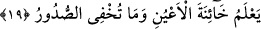

denecek yerde zâhirî itibarıyla hem kâfirleri hem de âsî müminleri içine alacak şekilde
“zâlimler için” denmesi, kâfirlerin zulmünü tescil etmek ve gerek “müşfik dost”un
gerekse “şefaatçı”nın yokluğunun özellikle kâfirleri ilgilendirdiğini göstermek içindir.
Bu durumda şu sâbit olmaktadır ki, âsi müslümanlar için hem dost hem de aracılığı
makbûl şefâatçılar olacaktır. Bunlar; Peygamberimiz (s.a.), diğer nebîler ve rasuller,
gözde velîler ve bütün melâike-i kirâmdır.
19. Allah, gözlerin hain bakışını ve kalplerin gizlediğini bilir.
“Allah gözlerin hâin bakışını…bilir.” Bu tefsire göre, hâinliğin bakışa isnâd
edilmesi mecâzdır. Çünkü hâin olan (göz değil o gözle) bakan kimsedir. “Hıyânet”
antlaşmayı gizlice bozup gerçeğe karşı çıkmak demektir. Zıddı emânettir. Burada
kasdedilen, mahrem olmayan yâni nikah düşen birine tıpkı şüphe sahiplerinin yaptığı
gibi gizlice ve korkarak bakış fırlatmak, âdeta görüntü çalmak ve böyle birine ikinci kez
bakmaktır. Bir haberde “Ey âdemoğlu! İlk bakış senin hakkındır. Peki ikinci bakış da ne
oluyor?” yâni ilk bakış âni olduğu için sana bağışlanmıştır. Ancak ikincisi kasıtla
yapıldığı için bağışlanmaz. Zira bu, göz zinâsı kabilindendir.
Mesnevî’den:
Göz zinâsından hoşlanırsın ama nihayet kendi yanından
Kopardığın eti kebap edip yemiyor musun ki?
Haram bakış İblis’in oklarından zehirli bir oktur. Böyle bir bakış gönle şehvet
tohumlarını eker. Fitne olarak bir insan için bakış kâfidir.
Kâşifî şöyle der:
Göz zinâsı, insanların kusurlarını araştırmak gibi haramdır.
Gözler Allah’ın kudretini görmek içindir, dost aybı için değil.
et-Te’vîlâtü’n-Necmiyye’de âyetin ilk kısmının işârî tefsiri sadedinde der ki:
Âşıkların hâin bakışları, sevgilileri dışındaki bir varlığı güzel görmeleri ve sevgili
dışındakilere bakmalarından ibârettir.
Bu mânâda olmak üzere şöyle denmiştir:
Şayet gözüm sizden başkasını güzel bulursa,
Onu te’dîb etmesini emrederim gözyaşlarıma.
Ebu Osman (k.s.) der ki: Gözün hıyâneti, harama bakmaktan sakındırılmaması ve
heves edilip arzulanacak şeylere karşı serbest bırakılmasıdır.
Ebu Bekr Verrâk (k.s.) şöyle der: Allah Teâlâ, herhangi bir şeye ondan ibret almak